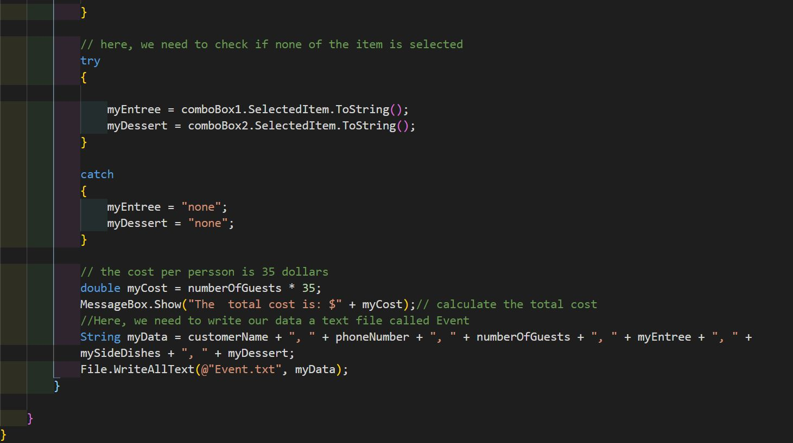
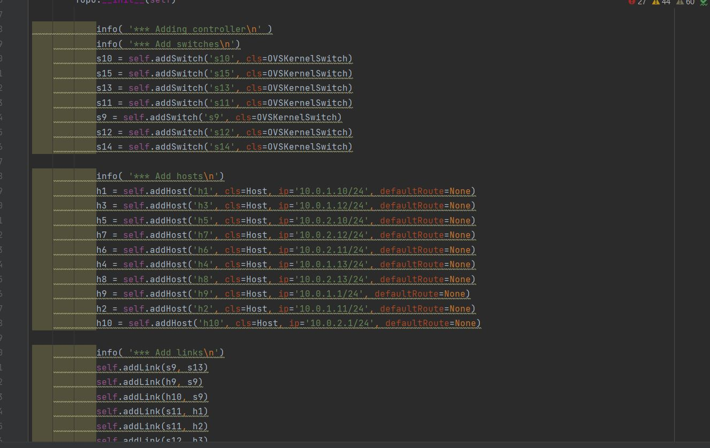
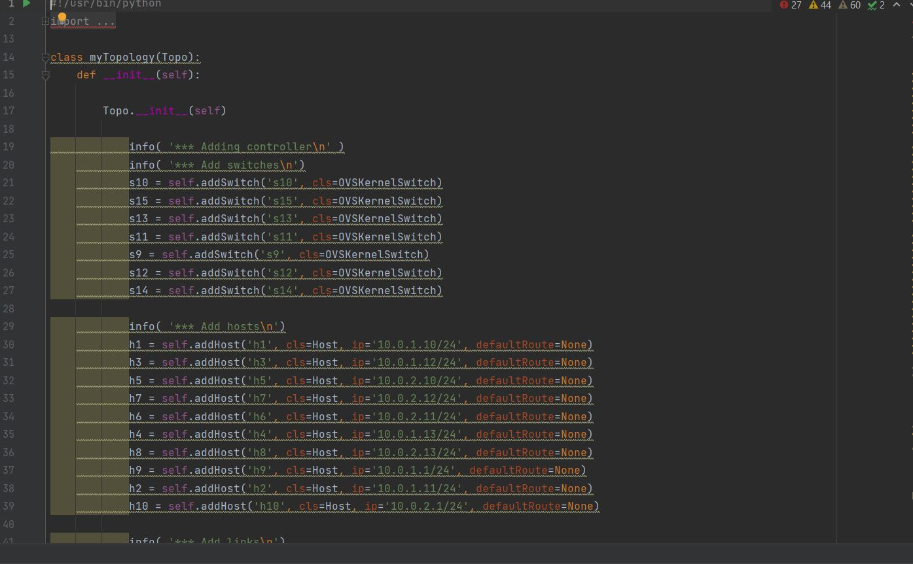

Catering Project
Simulates a catering program written in C#. Demonstrates understanding of core C# programming fundamentals

Source Code
Topology Project 1
This project simulates a network topology using Mininet Python APIs.

Source Code
Topology Project 2
Part 2 of the topology Project

Source Code